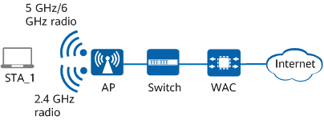

STA Steering
As better WLAN service experience is required, it is becoming increasingly important for STAs to associate with and connect to proper APs. The STA steering function steers STAs with poor service experience to proper APs based on the actual WLAN environment, improving WLAN service experience for STAs.
The STA steering function integrates functions such as band steering and dynamic load balancing.
- Before a STA is associated with an AP, Probe frames are suppressed to steer the STA preferentially to the 5 GHz or 6 GHz radio, for example, through the band steering function.
- After a STA is associated with an AP, the target AP selection algorithm is used to measure the dual-band capability of the STA, AP load, and signal quality, steering the STA to a better AP, for example, through the load balancing function.
STA Steering
Steering before STA association
In the STA association phase, the AP parses multi-band information carried in the Probe Request frame sent by a STA to determine whether the STA supports multiple frequency bands. If the STA supports multiple frequency bands, the AP suppresses access through the 2.4 GHz frequency band so that the STA can preferentially associate with the 5 GHz or 6 GHz radio. For details, see Band Steering.
Steering after STA association
-
- The WAC sorts APs by load.
- The WAC performs load balancing for APs in descending order by load.
- The WAC searches in the neighboring AP list of the STA and determines the target AP for the STA based on the algorithm.
- The WAC steers the STA to the target AP.
For details, see Dynamic Load Balancing.
-
If a STA is identified as a sticky STA, it is steered to another AP through smart roaming. For details, see Configuring Smart Roaming.
STA profiling technology and coordinated STA measurement capability help to increase the steering success rate. For details, see AI Roaming.
-
The WAC periodically traverses all online STAs, selects a STA whose access time is longer than 10 minutes, and determines whether a better AP is available for the STA. If a better AP is available, the WAC instructs the AP to steer the STA.
- Band steering
After a STA associates with an AP, the AP attempts to steer the STA from the 2.4 GHz radio to the 5 GHz or 6 GHz radio when the band steering conditions are met. For details, see Band Steering.
Steering policy for 6 GHz STAs
- In 5G/6G balancing mode, STAs are evenly steered to the 5 GHz and 6 GHz radios.
- In 6G-prior access mode, STAs are preferentially steered to the 6 GHz radio.
Bandwidth Ratio (5G:6G) |
Steering Ratio of STAs in 5G/6G Balancing Mode (5G:6G) |
Steering Ratio of STAs in 6G-Prior Access Mode (5G:6G) |
|---|---|---|
1:1 |
1:1 |
1:1.5 |
1:2 |
1:1.5 |
1:2.25 |
1:4 |
1:2 |
1:3 |
1:8 |
1:2.5 |
1:3.75 |
1:16 |
1:4 |
1:6 |
Neighboring AP List of STAs
Before steering a STA, the target AP to which the STA is steered is selected from the neighboring APs of the STA. Therefore, the WAC needs to collect, store, and maintain the neighboring AP list of STAs.
Information about neighboring APs of a STA can be obtained through Probe frames or STA Beacon Report measurement.
- Probe frame–based collection: APs proactively scan channels and collect STA information (for example, through Probe frames and management frames). After collecting STA information, APs periodically report the information to the WAC. The WAC then generates a neighboring AP list based on STA information.
- Beacon Report measurement: For 802.11k-compliant STAs, the Beacon Request/Report function enables the STAs to obtain the AP list from other STAs on a specified channel or a group of channels. These STAs then report the test results to the APs, and the APs periodically report the results to the WAC.
There are three measurement modes:
- Active: In this mode, the measurement STA obtains AP information returned by other STAs after sending Probe frames to other STAs.
- Passive: In this mode, the measurement STA only obtains AP information on other STAs but does not send Probe frames to other STAs.
- Beacon Table: In this mode, the measurement STA directly obtains AP information on other STAs.

During STA association, the AP parses the supported channels IE field in the request packet and reports the field to the WAC. The WAC then records the channels supported by each STA. When steering STAs, the WAC selects an appropriate AP for the STA based on the channel support status to ensure that the STA can still use wireless services after steering.
Band Steering
On live networks, most STAs support both 2.4 GHz and 5 GHz frequency bands, and some STAs also support the 6 GHz frequency band. Some STAs connect to a WLAN through APs on the 2.4 GHz frequency band by default. As a result, the 2.4 GHz frequency band with fewer channels becomes even more congested and heavily loaded, and also encounters strong interference. In contrast, the frequency bands with more channels and low interference, such as 5 GHz or 6 GHz, are not well utilized. When the 2.4 GHz frequency band is overloaded or has strong interference, the 5 GHz or 6 GHz frequency band can provide better access service for STAs, minimizing impact of interference on users' Internet access experience. To connect to the WLAN through the 5 GHz or 6 GHz frequency band, you need to manually select the specified radio on STAs.
The band steering function allows an AP to steer STAs to the 5 GHz or 6 GHz radio first, which reduces the traffic load and interference on the 2.4 GHz frequency band and improves user experience.
To implement band steering, an AP must have the same SSID and security policy on different frequency bands.

The band steering function is implemented through three phases:
- Low-band STA association suppression
If a STA supports a higher frequency band than that of the radio that the STA attempts to access, the AP suppresses STA access and steers the STA to a higher-band radio.
- 5G/6G-prior access
When the number of access STAs on an AP exceeds the start threshold for 5G/6G-prior access, the AP preferentially connects a new STA to the 5 GHz or 6 GHz radio.
When receiving a Probe Request frame from a new STA, the AP parses information about frequency bands supported by the STA from the Probe Request frame. If the STA supports dual or triple radios, the AP suppresses Probe Response frames on the 2.4 GHz radio and steers STAs to the 5 GHz or 6 GHz radio.
- Free selection of the frequency band
When the number of access STAs on an AP reaches the start threshold for 5G/6G-prior access and the percentage of access STAs on the 5 GHz or 6 GHz radio exceeds the specified percentage threshold, a new STA freely selects a frequency band.
After a STA associates with an AP, the AP attempts to steer the STA from the 2.4 GHz radio to the 5 GHz or 6 GHz radio when the band steering conditions are met.
Dynamic Load Balancing
Dynamic load balancing can evenly distribute AP traffic loads on the WLAN to ensure sufficient bandwidth for each STA. The dynamic load balancing function applies to high-density WLANs to ensure proper access of STAs. After dynamic load balancing is enabled on the WAC, if some APs are heavily loaded, the WAC steers some STAs on these APs to lightly loaded APs based on the dual-band capability of STAs, AP load, and AP signal quality, effectively utilizing AP resources.
Dynamic load balancing can be implemented among APs only when they are connected to the same WAC and the SSIDs of all these APs can be discovered by STAs.
After a STA goes online, the WAC obtains the frequency bands supported by the STA and information about neighboring APs based on STA Probe frame transmission and Beacon Report measurement. Then the WAC uses the load balancing algorithm to determine whether to connect the STA to an AP with a light load.
When implementing dynamic load balancing, the WAC calculates the load percentage of each radio in a load balancing group using the formula:
Load percentage of a radio = (Number of associated users on the radio/Maximum number of users allowed on the radio) x 100%
The WAC compares load percentages of all radios in the load balancing group and obtains the smallest load percentage value. When a new STA requests to access a radio, the AP calculates the difference between the radio's load percentage and the minimum load percentage, and compares the load difference with the load difference threshold (configured using a command). If the load difference is smaller than the threshold, the AP allows the STA to associate with the radio. Otherwise, the AP starts the load balancing mechanism and steers the STA to another lightly loaded radio.
STA Steering Mode
When a STA meets the steering trigger conditions, the AP steers the STA.
- For 802.11v-capable STAs, the AP preferentially steers the STAs in BTM mode. For STAs that do not support 802.11v, the AP steers the STAs in Deauthentication mode.
- Before sending a BTM or Deauthentication message to steer the STA, the AP instructs neighboring APs to suppress Probe or Authentication frames from the STA.
- The system does not steer STAs with voice or video services running.
- The system does not perform steering 5 minutes after a STA goes online or roams.